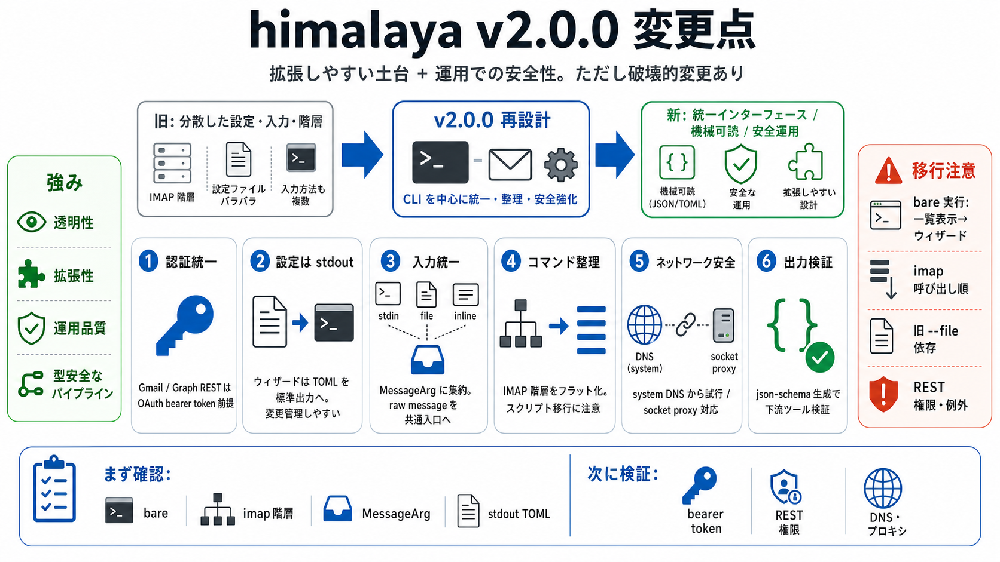

himalaya/CHANGELOG.md at master · pimalaya/himalaya · GitHub
* Brought the `m2dir` backend to CLI feature parity with `maildir` (messages, flags, envelopes); mailbox `rename` and me…

* Brought the `m2dir` backend to CLI feature parity with `maildir` (messages, flags, envelopes); mailbox `rename` and me…
The format is based on Keep a Changelog,. - Added Gmail REST API support: a `[gmail]` account backend behind the shared …
* Added `account.list.table.name-color` config option to customize the color used for the accounts' `NAME` column (defau…
# - $HOME/.config/himalaya/config.toml. # separated by `:`; the first one is the base and the rest are deep-merged on. #…
# himalaya 1.2.0. * Source code size: 556.28 kB This is the summed size of all the files inside the crates.io package fo…